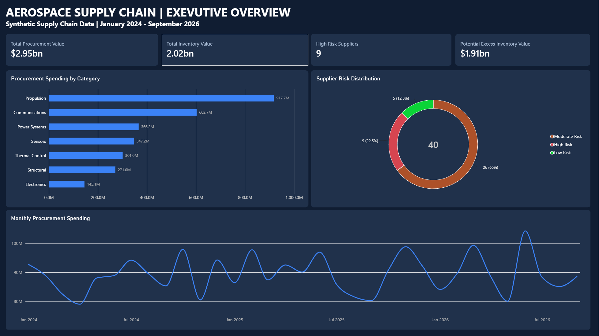
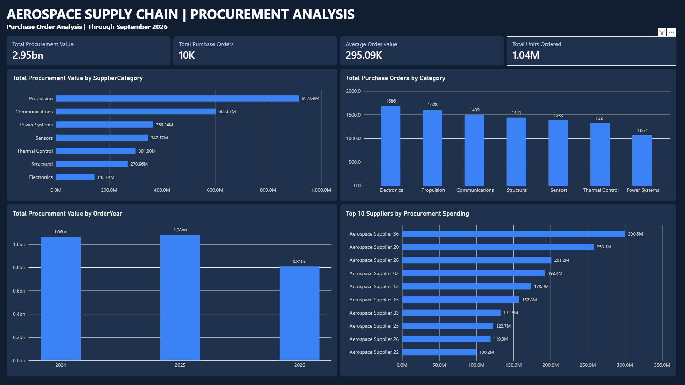
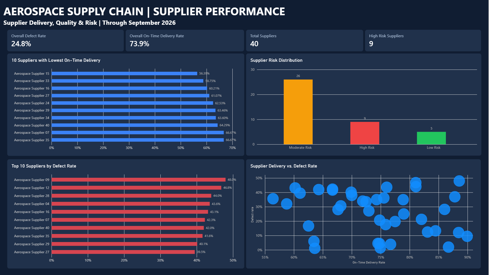
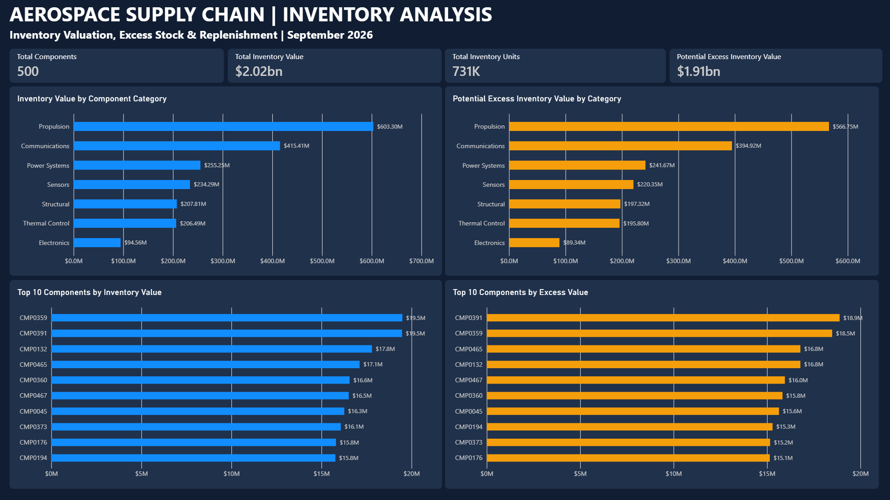
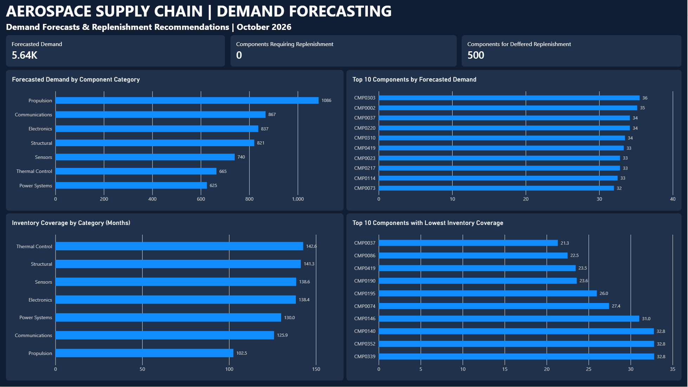

Project Overview
This project analyzes a simulated aerospace supply chain consisting of 40 suppliers, 500 components, 10,000 purchase orders, and 10,000 shipments.
Using Python, SQLite, and Power BI, I developed an end-to-end analytics workflow to evaluate procurement spending, supplier performance, inventory management, and demand forecasting.
All data was synthetically generated for educational and portfolio purposes.
Power BI Dashboards
Executive Overview

Procurement Analysis

Supplier Performance

Inventory Analysis

Demand Forecasting

Key Findings
- Procurement spending totaled approximately $2.95 billion across 10,000 purchase orders.
- Propulsion components represented the largest procurement category, accounting for approximately $917.69 million.
- Overall on-time supplier delivery was 73.9%, while the shipment-weighted defect rate was 24.8%.
- Nine of the 40 suppliers were classified as high risk based on delivery and quality performance.
- Inventory was valued at approximately $2.02 billion, with $1.91 billion identified as potential excess under simplified stock targets.
- A six-month moving-average model forecasted approximately 5,641 component units for October 2026.
Business Recommendations
- Prioritize supplier performance reviews for high-risk vendors experiencing delivery delays and quality issues.
- Review procurement spending concentration within high-value component categories.
- Investigate components with high modeled excess inventory exposure before making purchasing adjustments.
- Use historical demand forecasts alongside supplier lead times and production requirements to improve replenishment planning.
- Establish regular monitoring of supplier reliability, inventory coverage, and procurement spending trends.
Project Repository
Explore the Python data generation scripts, SQL analysis, Jupyter notebook, interactive Power BI report, and complete project documentation on GitHub.
View Full Project on GitHub →